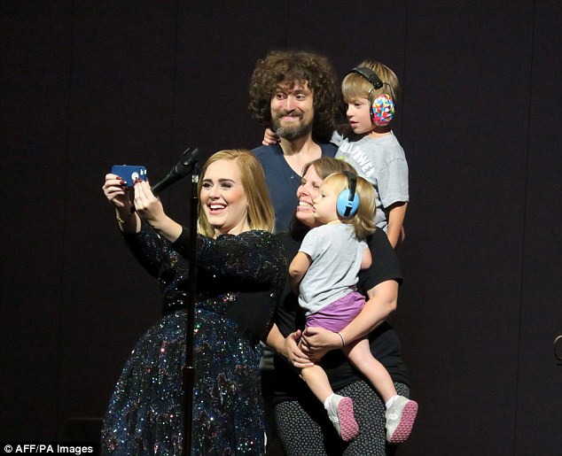
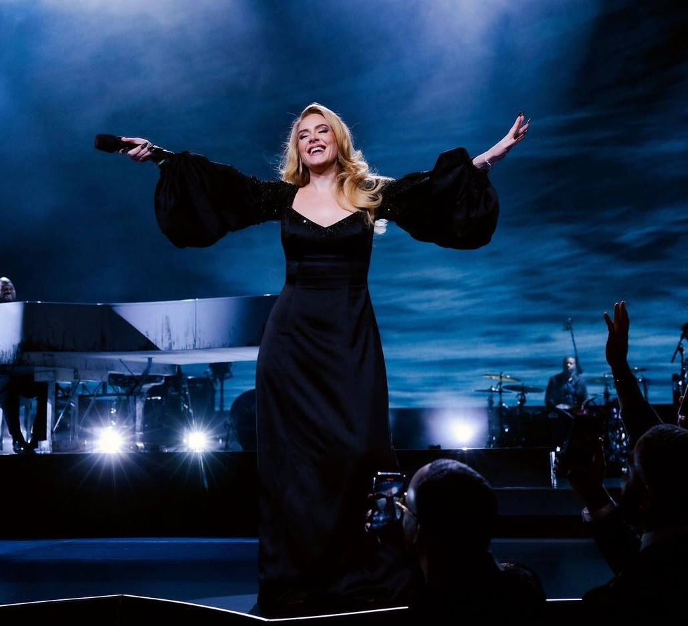

Adele tem um filho, Angelo,
nascido em 2012, fruto de seu relacionamento com Simon Konecki, com quem se casou em segredo por volta de 2016 e se separou oficialmente em 2019. Apesar da fama, ela sempre manteve sua vida pessoal bastante privada, priorizando o
bem-estar do filho e da família.
Após o divórcio, Adele passou por uma transformação
significativa em sua saúde física e mental, o que
gerou atenção da mídia.
Ela comentou publicamente sobre sua
jornada de autoconhecimento e crescimento pessoal
durante esse período.

Adele foi criada principalmente por sua mãe, Penny Adkins, que a teve aos 18 anos e sempre esteve ao lado da filha, incentivando seu talento musical desde cedo. As duas têm uma relação muito próxima, e Adele frequentemente reconhece o papel fundamental da mãe em sua vida e carreira. Já com o pai, Mark Evans, o relacionamento foi difícil. Ele abandonou a família quando Adele era pequena, o que causou um longo afastamento. Durante anos, quase não tiveram contato, mas se reconciliaram pouco antes da morte dele, em 2021.
Em 2012, Adele se tornou mãe de Angelo, fruto de seu relacionamento com o empresário e filantropo Simon Konecki. O nascimento do filho trouxe mudanças profundas na vida da cantora, que passou a proteger com firmeza a privacidade da criança. Adele e Simon se casaram discretamente, mas se separaram em 2019, finalizando o divórcio em 2021. Apesar da separação, os dois mantêm uma boa relação e compartilham a criação do filho de forma respeitosa.
A trajetória familiar de Adele, marcada por desafios, superações e reencontros, teve grande influência em sua vida pessoal e na autenticidade de sua música.
A vida familiar de Adele sempre foi marcada por emoções intensas e experiências que influenciaram diretamente sua carreira como artista. Desde jovem, ela percebeu a importância dos laços familiares, embora tenha crescido em um núcleo pequeno e sem uma estrutura tradicional. Essa realidade a fez desenvolver uma personalidade forte e independente, valorizando muito as conexões emocionais, mesmo as que foram quebradas.
A maternidade teve um impacto profundo em sua vida. Após o nascimento do filho Angelo, Adele passou por momentos difíceis, incluindo depressão pós-parto, que só revelou anos depois. Ela considerou essa fase um grande desafio, mas também um momento importante de crescimento pessoal. A maternidade a ensinou sobre limites, entrega e a necessidade de cuidar de si mesma para poder cuidar dos outros, além de influenciar suas escolhas de vida e sua busca por equilíbrio entre a vida pública e pessoal.
Além da família biológica, Adele valoriza muito as relações com amigos próximos, que considera sua “família escolhida”. Essas relações de confiança são fundamentais para sua estabilidade emocional e criatividade. Ao longo de sua carreira, ela sempre buscou manter os pés no chão e estar cercada por pessoas verdadeiras, algo que reflete a criação simples e sincera que recebeu da mãe.

Adele é uma das cantoras mais talentosas e reconhecidas mundialmente, mas poucas pessoas sabem alguns detalhes interessantes sobre sua vida e carreira. Seu nome completo é Adele Laurie Blue Adkins, e ela começou sua trajetória musical ainda jovem, estudando na famosa BRIT School, onde também passaram outras grandes estrelas como Amy Winehouse. Antes de alcançar o sucesso, Adele trabalhou em uma loja de roupas enquanto se dedicava a desenvolver sua voz poderosa, que tem uma extensão de quase três oitavas.
Sua música é fortemente influenciada pelo jazz e por cantoras lendárias como Etta James e Ella Fitzgerald, o que ajudou a moldar seu estilo único e emotivo. Em 2020, a cantora chamou a atenção ao revelar uma grande transformação em seu corpo, após perder cerca de 45 quilos graças a mudanças no estilo de vida e exercícios físicos. Além do inglês, ela já se aventurou a cantar em francês e espanhol em algumas ocasiões especiais, mostrando sua versatilidade.
Apesar de toda a fama, Adele é muito reservada quando o assunto é sua vida pessoal. Ela protege com cuidado a privacidade da família e evita expor detalhes íntimos para a mídia. Ao longo da carreira, ganhou inúmeros prêmios importantes, incluindo vários Grammys de “Álbum do Ano” pelos seus discos “21” e “25”. Além da música, Adele também é conhecida por seu envolvimento em causas sociais, especialmente em campanhas contra a violência doméstica.
Essas curiosidades mostram que, além de uma voz incrível, Adele é uma pessoa determinada, humilde e comprometida com seus valores, o que a torna ainda mais admirada por fãs ao redor do mundo.

Adele é uma das artistas mais premiadas e influentes da música atual. Desde seu álbum de estreia “19”, ela já se destacava, mas foi com “21” que alcançou o auge, ganhando seis Grammys em uma única noite, incluindo “Álbum do Ano” e “Canção do Ano”. Além dos Grammys, Adele ganhou um Oscar pela música “Skyfall”, além de vários prêmios Brit Awards, Billboard e American Music Awards.
Ela quebrou recordes de vendas, como o álbum “25”, que teve a maior venda na primeira semana nos EUA, com mais de 3 milhões de cópias vendidas. Suas músicas frequentemente lideram as paradas mundiais e ela é reconhecida pela sua influência cultural, tendo sido listada pela revista Time entre as 100 pessoas mais influentes do mundo em 2013.
O sucesso de Adele vai além das vendas e prêmios — sua sinceridade, talento e conexão com o público a tornam uma das vozes mais importantes da sua geração.